齐白石的三百方石印，为其家属在1956年捐献，其中除去少量是为家人、学生和他人所刻印章外，大部为其自用印。这些印章充分反映了，齐白石篆刻艺术的发展轨迹及印风的形成过程，其中尤以七八十岁时，所刻大量用于画上的词句印章为典型。
| 印文：吾友梅花 | 材质：青田石 | ||
| 身健穷愁不须耻（朱文） | 说明：此印为齐白石早期学丁黄印作品，约三十五岁前后临作。 | ||
| 臣璜之印（白文）， |  |
说明：早期仿汉印之作，约成于三十二岁至四十岁间。 | |
| 我生无田食破砚（朱文），说明：此印为齐白石早期学丁黄印作品，款为友人黎鲽庵所刻。戊戌为清光绪二十四年（一八九八年），时齐白石三十六岁。 | 时间：1898（戊戌） 边款：钝叟有此印，寄老仿之，直得神似。近来以铁书称者，吾家松弇鲸公而外，它人未许梦见斯种也，戊戌春三，鲽庵获观识此。 |
||
| 印文：齐濒生（白文） 说明：早期学明人法，约刻于三十二岁至四十岁间。 |
 |
纵1.8cm；横1.8cm；高4.7cm | |
| 印文：心无妄思（白文） 边款：齐大摹前人。 |
说明：此印仿丁敬，齐白石三十二岁至四十岁为学丁黄阶段，故断此印约刻于三十二岁至四十岁间。 | ||
| 印文：砚田农（白文） | 纵2.3cm；横2.2cm；高2.5cm 说明：此印仿丁敬，齐白石三十二岁至四十岁为学丁黄阶段，故断此印约刻于三十二岁至四十岁间。 |
||
| 齐大（朱文） | 材质：寿山石 | ||
| 印文： 一相思（白文）二齐璜（朱文）三濒生（朱文）四濒生齐氏（朱文）五一别故人生百忧（朱文）六“阔边长方框”（无字） |
六面印 青田石无年款 尺寸：纵2.2cm；横2.2cm；高1.4cm |
||
| 苹翁（朱文） | 材质：寿山芙蓉 | ||
| 木人（朱文） | 纵0.8cm；横0.8cm；高4.3cm | ||
| 印文：齐白石（朱文） | 尺寸：纵1.7cm；横2cm；高4.8cm | ||
| 印文：小名阿芝（朱文） | 纵2cm；横2cm；高5.4cm |  |
|
| 老白（白文） | 尺寸：纵1.2cm；横1.4cm；高3.1cm | ||
| 印文：一一阕词人（白文）二吾年八十二矣（白文） | 材质：青田石 | ||
| 乐石室（白文） 时间：1914（甲寅） |
纵2.2cm；横2.2cm；高4cm | ||
| 印文：五十以后始学填词记（白文） | 纵1.8cm；横2.1cm高4.3cm | ||
| 印文：一借山主人（朱文）二齐白石（白文） |  |
||
| 印文：濒生（朱文） | 纵0.8cm；横0.8cm；高2.3cm | ||
| 印文：一老苹辛苦（白文）二齐璜印（朱文）三齐房之印（白文）四齐人（朱文）五阿芝（朱文） | 材质：寿山石 | ||
| 印文：平翁（白文） | 材质：寿山石 时间：1918（戊午） |
||
| 印文：苹翁（白文） | 边款：戊午，草莽之中，白石老人。 | ||
| 印文：戊午后以字行（朱文） | 尺寸：纵2.7cm；横2.7cm；高1.1cm | ||
| 两面印 印文： 一白石曾观（朱文） 二齐璜观（朱文） |
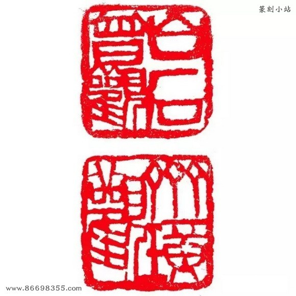 | 尺寸：纵2.6cm；横2.5cm；高1.1cm | |
| 印文：三百石印富翁（朱文） 时间：1919（己未） |
边款：此石己未年居法源寺刻，庚申居前青厂补记。白石。 | ||
| 三容颜减尽但余愁（朱文）四五世同堂（白文） | 边款：老萍三游京师，看西山，感刊板桥《西郊感旧》词句。己未三月。 | ||
| 五面印 印文：一齐璜暮年又见（朱文）二齐木人（朱文）三平翁又白（朱文）四白石白事（白文）五安得平安（朱文） |
材质：寿山石 | ||
| 印文：白石翁（白文） | 时间：1919（己未） | ||
| 印文：白石山人（白文） | |||
| 印文：移生（朱文） | 边款：庚申五日，移生侍余京师，为刊此石。公公并记。 | ||
| 两面印印文：一白石孙子（朱文）二齐秉灵印（白文） 边款：庚申春，将携移孙入京，刊此赐之。白石老人。 |
时间：1920（庚申） | ||
| 印文：子如赏鉴金石文字记（朱文） |  |
||
| 三面印 印文：一知我只有梅花（白文）二萍翁叚读（朱文）三白石叚看（白文） |
|||
| 印文：木居士（白文）时间：1920（庚申） 边款： 此三字五刻五画，始得成章法，非绝世心手，不能知此中艰苦，寻常人见之，必以余言自夸也。庚申四月二十六日记。时家山兵乱，不能不忧。白石老人又及。 |
|||
| 印文：阿芝（朱文） 边款：庚申四月，白石自制。时故乡再四兵灾，未知父母何处草间偷活，妻子仍旧紫荆山下否？ |
|||
| 印文：芝（朱文） 边款：白石自刻，四过都门。 |
材质：昌化鸡血 | ||
| 印文：借山翁（白文） |  |
材质：寿山石 | 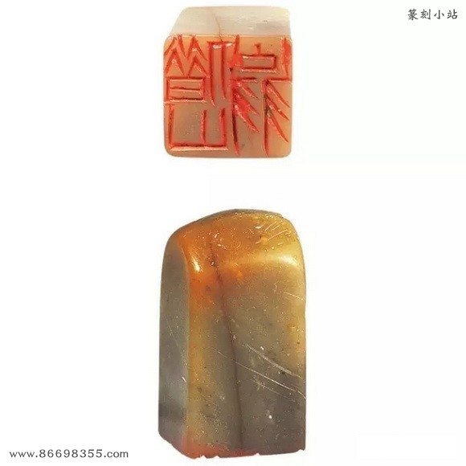 |
| 印文：八砚楼（白文） |  |
纵2.8cm；横2.8cm；高6.4cm | |
| 连珠印 印文：一白石翁（白文）二老平（朱文） 边款：辛酉七月，白石自刊于京华。 |
材质：寿山石 |  |
|
| 印文：老齐（朱文）时间：1921（辛酉） 边款：辛酉秋，白石自制于京师。 |
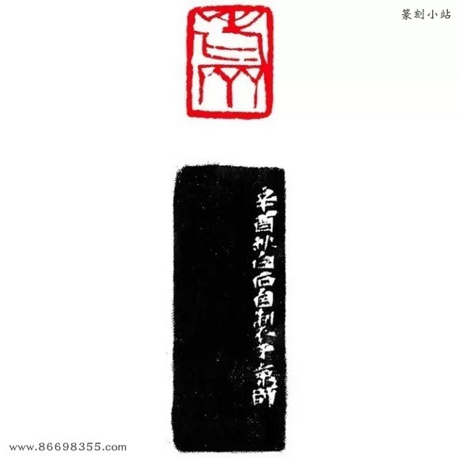 | 尺寸：纵1.8cm；横1.3cm；高4.2cm |  |
| 印文：甑屋（朱文） | 材质：青田封门青 | ||
| 印文：鲁班门下（朱文） 时间：1922（壬戌） 边款：六十后刊旧句，七十岁时补记。辛未秋，白石山翁。 |
|||
| 印文：阿芝（朱文） | 材质：寿山石尺寸：纵1.7cm；横1.7cm；高4.6cm | ||
| 印文：阿芝（白文） | 材质：寿山石 | ||
| 印文：白石翁（白文） 时间：1923（癸亥） |
材质：寿山芙蓉 | ||
| 印文：老齐郎（朱文） 边款：余年六十矣，今宵夜亡，不为短命，刊此一笑。癸亥十一月廿二日镫下，白石。 |
材质：寿山石 | ||
| 印文：山姬带病相扶持（白文） |  |
尺寸：纵3cm；横3cm；高5.7cm | |
| 印文：白石翁（白文） | 材质：寿山石 | 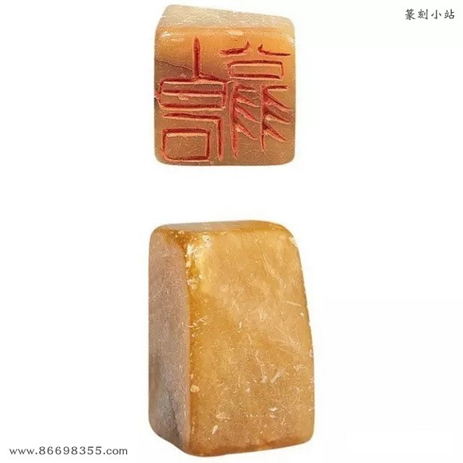 | |
| 印文：古潭州人（白文） | 尺寸：纵2.8cm；横2.8cm；高5.4cm | ||
| 印文：古潭州人（朱文） | 尺寸：纵2.8cm；横2.8cm；高1.2cm |  |
|
| 印文：湘上老农（白文） | 材质：寿山石 | ||
| 印文：连山好竹人家（朱文） | 尺寸：纵3.8cm；横3.8cm；高2cm | ||
| 印文：白石（白文） | 尺寸：纵2cm；横1.2cm；高2.3cm | ||
| 印文：鬼神使之非人工（朱文） 边款：甲子正月二日，白石山翁自刊，时居北京鸭子庙侧。 |
材质：寿山石 时间：1924（甲子） |
||
| 印文：接木移花手段（白文） | 纵4cm；横4.1cm；高4.5cm | ||
| 木人（朱文） 时间：1925（乙丑） |
|||
| 印文：白石翁（白文） 边款：乙丑四月，余还家省亲，留连长沙，有索画者嫌画中无印记，不足为信，余因刊此石。余所用“白石翁”三字小印已有四石，后之监（鉴）定者留意。白石自刊并记。 |
材质：青田封门青 时间：1925（乙丑） |
||
| 印文：桂子（白文） 边款：宝姬自言胡以茂之女，母为胡二嫂，兄字海生，姊嫁朱德举家。姬忘其年庚，犹能记得母常言曰桂子乃偏头年生。想是壬寅年，与容色相合无疑矣。乙丑，如夫记。桂子乃宝姬小名也，余为刊石以记之，知属八月生耳。老萍又及。 |
时间：1925（乙丑） 尺寸：纵1.8cm；横1.3cm；高3.8cm |
||
| 印文：宝（朱文） | 材质：寿山石 尺寸：纵2cm；横1.5cm；高2.6cm |
||
| 印文：宝君（白文） | 尺寸：纵1.9cm；横1.9cm；高4.5cm | ||
| 印文：绕屋衡峰七十二（朱文） | 尺寸：纵2.9cm；横2.9cm；高4.8cm 材质：寿山石 |
||
| 印文：患难见交情（朱文） | 材质：寿山石 尺寸：纵3.2cm；横3.2cm；高7.8cm |
||
| 印文：要知天道酬勤（朱文） | 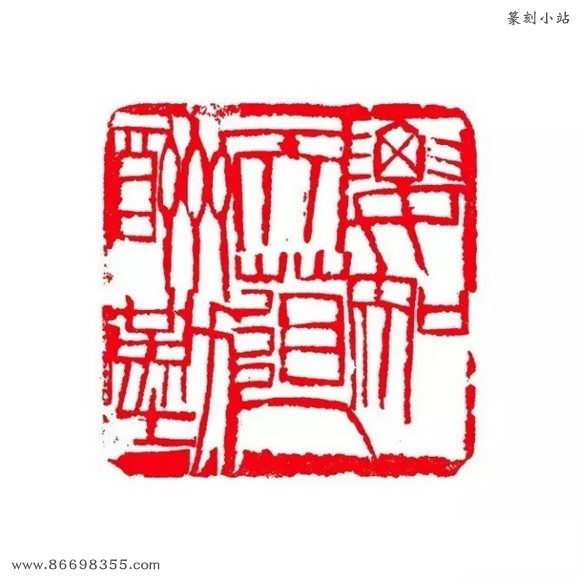 | 材质：寿山石 尺寸：纵4.1cm；横4.1cm；高1.2cm |
|
| 印文：借山馆记（白文） | 尺寸：纵1.8cm；横1.8cm；高2.3cm 时间：1928（戊辰） |
||
| 印文：倦也欲瞑君且去（白文） | 尺寸：纵3.8cm；横3.8cm；高4.8cm | ||
| 印文：儿辈不贱家鸡（朱文） | 材质：寿山石 尺寸：纵3.1cm；横3.1cm；高5.4cm |
||
| 印文：悔乌堂（朱文） | 尺寸：纵8cm；横3.3cm；高4.2cm | ||
| 印文：齐胡桂子（朱文） 边款：桂子，宝姨小名也。己巳，老夫白石刊。 |
材质：寿山石 尺寸：纵1.7cm；横1.7cm；高6.2cm 时间：1929（己巳） |
||
| 印文：煮画庖（白文） | 尺寸：纵4cm；横4cm；高7cm |  |
|
| 印文：煮画山庖（朱文） | 材质：寿山芙蓉 尺寸：纵3.3cm；横3.3cm；高4.8cm |
 |
|
| 煮石（朱文） | |||
| 故乡无此好天恩（朱文） |  |
||
| 白石造稿（白文） | 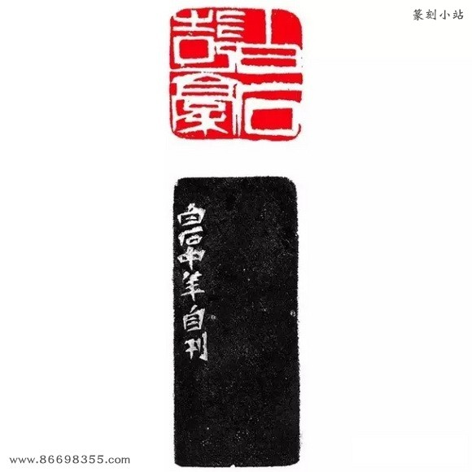 | ||
| 梦想芙蓉路八千（朱文） | |||
| 萍翁（白文） | |||
| 纵5.8cm；横5.8cm；高1.4cm | |||
| 佩铃人（白文） |  |
||
| 吾幼挂书牛角（朱文） | 纵2.8cm；横2.8cm；高5cm | ||
| 也曾卧看牛山（白文） | 纵3.2cm；横2.1cm；高5.8cm | ||
| 重三（朱文） | 寿山白芙蓉 纵2.3cm；横2.3cm；高7.4cm |
||
| 偷活沉吟（白文） | 昌化鸡血 纵2.3cm；横2.3cm；高3.1cm |
||
| 吾少清平（白文） | 纵3.7cm；横3.8cm；高1.8cm | 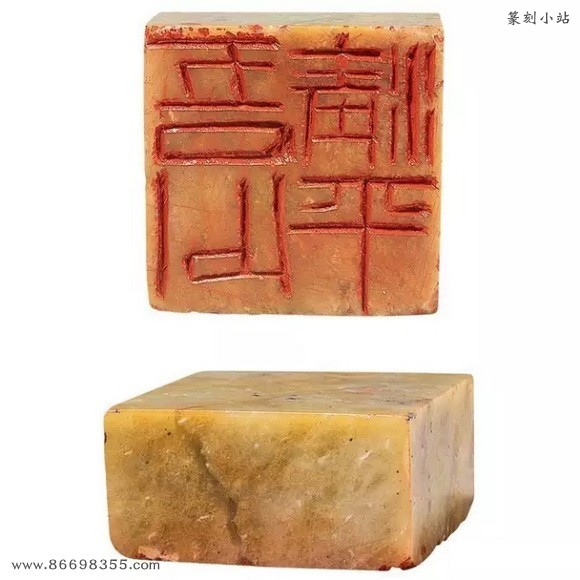 | |
| 思持年少渔竿（白文） | 寿山石 纵3cm；横3cm；高6.8cm |
||
| 叹清平在中年过了（白文） | 寿山石 纵3.3cm；横3.3cm；高7.5cm |
||
| 老年流涕哭樊山（白文） | 寿山石 纵3.1cm；横3.1cm；高6cm |
||
| 老岂作锣下猕猴（白文） | 寿山石 纵3.1cm；横3.2cm；高9.6cm |
||
| 半聋（朱文） 边款：辛未冬十月刊于旧京，观者同学八九人。 |
青田石 纵2.8cm；横2.8cm；高6cm |
||
| 吾画遍行天下伪造居多（朱文） | 青田石 纵4.8cm；横4.7cm；高8.4cm |
||
| 有眼应识真伪（白文） | 寿山芙蓉 纵3.3cm；横3.3cm；高11.1cm |
||
| 阿芝（白文） | 寿山石 纵2.8cm；横1.5cm；高4cm |
||
| 齐大（白文） | 青田封门青 纵1.6cm；横1.5cm；高4.5cm |
||
| 齐宝珠（白文） | 青田石 纵1.6cm；横1.5cm；高3.6cm |
||
| 七十以后（白文） 边款：此石宝姬处借来，予八十岁后倘不死，当另刊一石，此石退还。白石。 |
纵3cm；横3cm；高5.5cm | ||
| 苹翁（白文） | 青田石 纵0.6cm；横0.6cm；高2cm |
||
| 大匠之门（白文） | 寿山石 纵3cm；横3cm；高3.2cm |
||
| 恨翁（朱文） | 纵0.7cm；横0.7cm；高4.5cm | ||
| 老去无因哑且聋（朱文） | 寿山芙蓉 纵4.5cm；横4.5cm；高10.5cm |
||
| 甑屋（朱文） 边款：“甑屋”二字，早刻之于石。癸酉夏，无可消愁，自行刻印。检得此石，亦早篆上“甑屋”二字，不忍洗去，遂重刻之。白石。 |
青田封门青 纵2.6cm；横2.6cm；高3.5cm |
||
| 知己有恩（朱文） | 青田石 纵2.2cm；横2.3cm；高3cm |
||
| 安得子孙宝之（朱文） 边款：日来宝姬病作，吾心愁闷，行坐未安，只好刻印消愁。误刻左旋，无意再刻也。癸酉十月初八日，时居旧京鸭子庙侧。白石自记。 |
青田石 纵2.9cm；横2.9cm；高6.3cm |
||
| 三馀（朱文） 边款：诗者睡之馀，画者工之馀，寿者劫之馀，此白石之“三馀”也。癸酉秋九月，刊于故都。 |
寿山石 纵2.9cm；横2.9cm；高6.4cm |
||
| 木居士记（朱文） | 寿山石 纵2.5cm；横2.5cm；高4.9cm |
||
| 忆君肠欲断（白文） 边款：刊温庭筠词句。癸酉冬，白石自用。 |
青田石 纵2.5cm；横2.5cm；高6.2cm |
||
| 闲散误生平（白文） 边款：此石乃友人为刻，儿辈背予磨去。今见之收回，刻此五字。癸酉，白石并记。 |
青田石 纵2.9cm；横2.9cm；高3.1cm |
||
| 白石相赠（白文） | 纵2.2cm；横2.2cm；高3.2cm | ||
| 两面印 一癸酉（朱文） 二甲戌（白文） |
纵2.6cm；横2.6cm；高1.5cm | ||
| 强作风雅客（朱文） | 纵3.5cm；横3.5cm；高2cm | ||
| 吾道何之（朱文） | 寿山石 纵2.7cm；横2.7cm；高5cm |
||
| 以农器谱传吾子孙（白文） | 寿山芙蓉 纵4.5cm；横4.5cm；高10.7cm |
||
| 白石（朱文） | 寿山石 纵2.3cm；横2.3cm；高5.8cm |
||
| 白石草衣（白文） |  |
纵2.3cm；横2.3cm；高4.7cm |  |
| 寄萍堂（白文） |  |
寿山石 纵3cm；横3.2cm；高3.2cm |
|
| 寻思百计不如闲（朱文） | 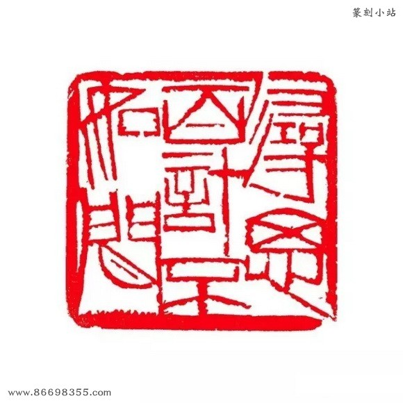 | 纵4.7cm；横4.9cm；高9.5cm | |
| 寂寞之道（白文） | 杂石 纵2.9cm；横2.8cm；高3.2cm |
||
| 归梦看池鱼（朱文） | 寿山石 纵3.8cm；横3.8cm；高2cm |
||
| 三千门客赵吴无（白文） | 纵4.4cm；横4.4cm；高0.8cm | ||
| 私淑何人不昧恩（白文） | 寿山石 纵3.4cm；横3.4cm；高3.9cm |
||
| 容颜减尽但馀愁（朱文） | 纵3.8cm；横3.8cm；高1.4cm | ||
| 齐菊如（白文） | 纵1.7cm；横1.7cm；高1.8cm | 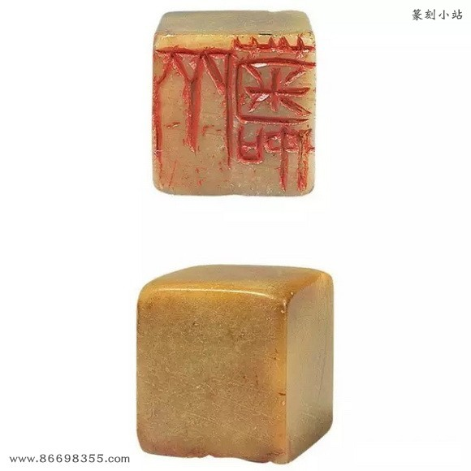 | |
| 齐良琨（白文） | 寿山石 纵1.7cm；横1.7cm；高7.5cm |
||
| 齐良止印（白文） | 寿山石 纵2.1cm；横2.1cm；高7.3cm |
||
| 龙山社长（白文） | 纵2.2cm；横2.2cm；高3.9cm | ||
| 借山馆（朱文） | 纵2.8cm；横2.8cm；高5.7cm | ||
| 行年七十三（朱文） | 纵3cm；横3cm；高2cm | ||
| 蛩鸣无不平（白文） | 纵3.7cm；横3.7cm；高8.8cm | ||
| 苦吟一似寒蛩号（白文） | 寿山石 纵3.6cm；横3.5cm；高8.3cm |
||
| 为客负梨花（朱文） | 纵3.7cm；横3.7cm；高8.9cm | 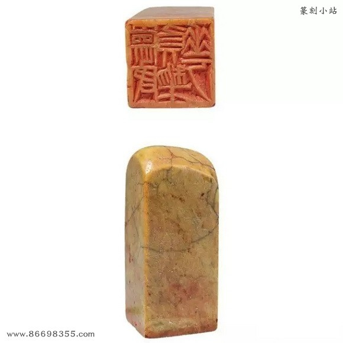 | |
| 梨花小院思君（朱文） | 纵3.8cm；横3.8cm；高2cm | ||
| 梨花小院（白文） | 纵2.5cm；横2.5cm；高5.1cm | ||
| 难如人意一生惭（白文） | |||
| 惭愧世人知（白文） | |||
| 思安卜鬼神（白文） | 杂石 纵4.5cm；横4.6cm；高10.3cm |
||
| 牵牛不饮洗耳水（白文） | 杂石 纵4.7cm；横4.7cm；高1cm |
||
| 星塘白屋不出公卿（朱文） | 寿山石 纵3.9cm；横3.9cm；高4cm |
||
| 刘宏（朱文） | 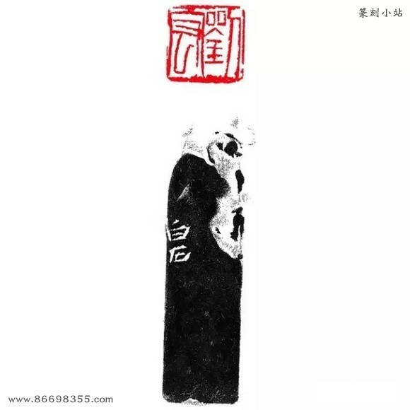 | 寿山桃花冻 纵1.8cm；横1.8cm；高6cm |
|
| 纲（白文） 边款：盛纲道兄。白石老人。 |
寿山朱砂 纵1.5cm；横1.5cm；高4cm |
||
| 王永树印（白文） | 寿山桃花冻 纵2.3cm；横2.3cm；高7.3cm |
||
| 邓燕林（朱文） | 青田封门青 纵2cm；横2cm；高7.1cm |
||
| 保穉堂（白文） | 纵1.7cm；横1.7cm；高2.6cm | ||
| 偶吟（朱文） | 寿山石 纵2.5cm；横2.5cm；高5.2cm |
||
| 蔚山收藏（朱文） | 纵2.9cm；横2.1cm；高4.5cm |  |
|
| 寿山石 | 纵2.1cm；横2.1cm；高6cm | ||
| 西山风日思君（白文） | 纵3.1cm；横3.1cm；高6cm | ||
| 往事思量著（白文） 边款：甲戌六月，重刊温庭筠词句。乙丑二月，白石自刊。 |
寿山石 纵2.8cm；横2.8cm；高5.6cm |
||
| 非儿（白文） 边款：非儿字也。生半日即死，忘其年日，埋于燕京湘潭馆外之众坟间。甲戌六月，追忆伤情，刊印记之。白石。 |
寿山石 纵1.9cm；横2cm；高4.1cm |
||
| 一襟幽事砌蛩能说（朱文） 边款：余暮年喜读宋词，有我口所欲言而古人为言者，借之刊为印章。此八字周密句。甲戌七夕前二日，时居故都。白石并记。 |
杂石 纵3.3cm；横3.3cm；高4.7cm |
||
| 我负人人当负我（白文） 边款：甲戌九月十八日，柏云言归，赠此二石与余别。白石老人刊于旧京并记。 |
纵3cm；横3cm；高6.3cm | ||
| 良年（白文） 边款：余第七子名良年，字寿翁，一字翁子，为刊此印，时生纔三月。甲戌七月二十一日，乃翁白石并记。 |
寿山芙蓉 纵2cm；横2cm；高4.4cm |
||
| 扫门者四时风（白文） |  |
纵3.5cm；横3.5cm；高10cm |  |
| 买糸原绣绣糸人（白文） | 纵3.2cm；横3.2cm；高4.2cm | 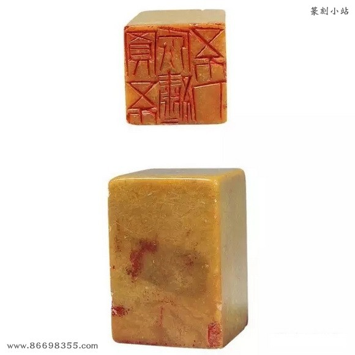 | |
| 叹浮名堪一笑（白文） | 纵3.5cm；横3.5cm；高7.3cm | ||
| 百怪来我肠（白文） | 纵3.7cm；横3.7cm；高1.5cm | ||
| 宁肯人负我（白文） | 寿山石 纵2.7cm；横2.8cm；高6.4cm |
||
| 齐良欢（白文） 边款：欢欢七岁，刊此与之。乃翁。 |
纵1.5cm；横1.5cm；高5.5cm | ||
| 杏子邬老民（白文） 边款：杏子邬离湘潭百里，余生长地也。今居燕十又八年，尚无归志，恐不生还，因刊此印。白石。 |
纵2.8cm；横2.8cm；高6.4cm | ||
| 岂辜负西山杜宇（白文）边款：不如归去，岂辜负西山杜宇。白石句也，自刊末七字，甲戌客故都。 | 寿山石 纵3.5cm；横3.8cm；高3.8cm |
||
| 门人知己即恩人（朱文） | 纵4.1cm；横4.2cm；高1.8cm | ||
| 门人半知己（朱文） | 寿山石 纵3.2cm；横3.2cm；高5cm |
||
| 风前月下清吟（朱文） | 寿山芙蓉 纵4cm；横4cm；高7.7cm |
 |
|
| 七三老妇八千里（朱文） 说明：此印为居京鬻画，思念家乡老妻之作。陈春君较齐白石年长一岁，是年陈春君七十三岁，故断此印下限为一九三四年。 |
寿山石 纵3cm；横3cm；高5.5cm |
 |
|
| 太平无事不忘君恩（朱文） | 纵4.2cm；横4.2cm；高10.7cm | 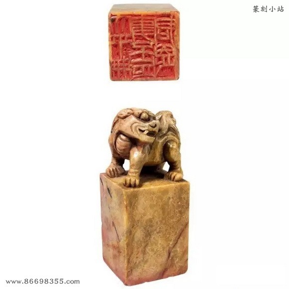 | |
| 平翁（朱文） | 寿山石 纵2.4cm；横2.4cm；高7.4cm |
||
| 借山翁（朱文） | 纵2.2cm；横2.2cm；高3.6cm | ||
| 穷后能诗（朱文） | 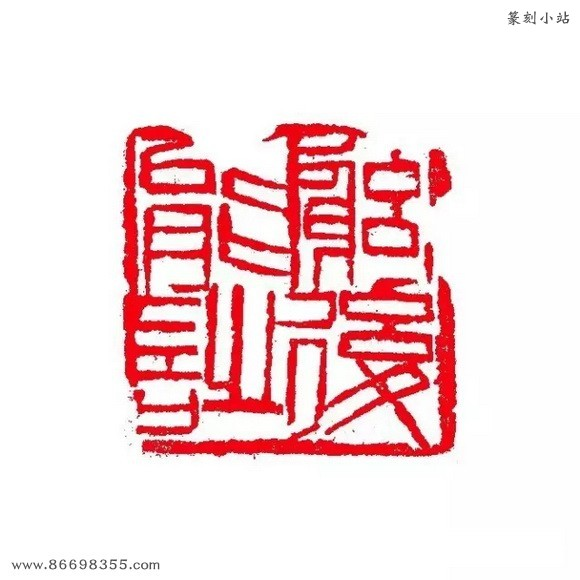 | 寿山石 纵2.5cm；横2.5cm；高7.7cm |
|
| 老白（白文） | 纵2.4cm；横2.2cm；高5.2cm | ||
| 寄萍堂（朱文） | 纵8cm；横2.7cm；高2cm | ||
| 乙亥（白文） | 纵2.2cm；横2.8cm；高5cm | ||
| 七三翁（朱文） | 寿山石 纵2.1cm；横2.1cm；高1.5cm |
||
| 七十三岁后镌（白文） | 纵2.6cm；横2.5cm；高5.9cm | ||
| 隔花人远天涯近（白文） | 纵3.7cm；横3.8cm；高7cm | ||
| 客久子孙疏（朱文） | 纵3cm；横3.1cm；高9.9cm | ||
| 客久思乡（白文） | 寿山芙蓉 纵2.4cm；横2.4cm；高7cm |
||
| 悔乌堂（朱文） | 纵2.7cm；横2.7cm；高7.7cm | ||
| 归计何迟（朱文） 据《白石老人自述》，民国二十四年阴历二月二十八日，携宝珠南行，在茹家冲家里住了三天，别时不忍与妻春君相见，悄悄离家返京。归京后怀乡追远之念与日俱增，因刻“归计何迟”，自谴为何归家如此之迟，故断此印约刻于一九三五年。 |
 |
寿山石 纵2.7cm；横2.7cm；高7.7cm |
|
| 还家休听鹧鸪啼（白文） | 纵3cm；横3cm；高6.4cm | ||
| 赢得鬓须残雪（白文） | 纵3.2cm；横3.2cm；高6.4cm | ||
| 何用余忧（白文） | 寿山石 纵2.5cm；横2.5cm；高5.2cm |
 |
|
| 何用相思（白文） | 纵2.5cm；横2.6cm；高4.3cm | ||
| 苹翁（白文） | 纵1.5cm；横1.5cm；高3.7cm | ||
| 跛翁虎尾（朱文） | 纵3.3cm；横3.3cm；高4.3cm |  |
|
| 齐白石（白文）边款：天下一切画会无能加入，刊此以却邀求。己巳八月，白石自记。乙亥九月重刊。白石。 | 昌化鸡血 纵2.5cm；横2.5cm；高1.5cm |
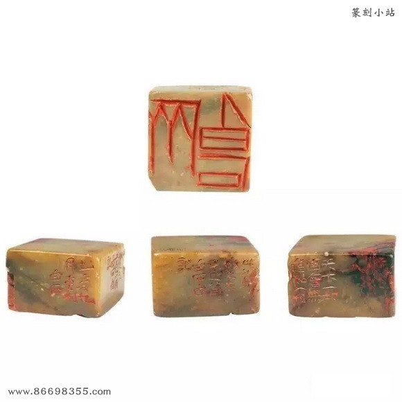 | |
| 丙子（白文） | 纵3.1cm；横1.7cm；高4.2cm |  |
|
| 借山吟馆主者（白文） | 寿山芙蓉 纵3.1cm；横3.2cm；高6.8cm |
||
| 白石印记（白文） | 寿山石 纵1.4cm；横1.4cm；高3.4cm |
||
| 白石私记（白文） | 寿山石 纵1.7cm；横1.7cm；高3cm |
||
| 白石之记（朱文） | 纵1.8cm；横1.4cm；高3.8cm | ||
| 白石曾见（朱文） | 纵2.4cm；横2cm；高3.8cm | ||
| 长年大利（朱文） | 寿山石 纵2.7cm；横2.3cm；高8cm |
||
| 美意延年（朱文） | 纵2.8cm；横2.8cm；高5.2cm | 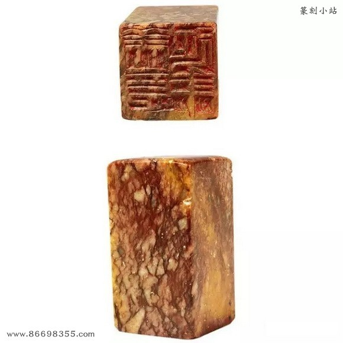 | |
| 齐大（朱文） | 纵2.3cm；横2.5cm；高2.5cm | ||
| 老萍手段（白文） | 纵2.5cm；横2.5cm；高4.3cm | ||
| 白石（朱文） | 寿山石 纵3.5cm；横3.5cm；高5cm |
||
| 吾道西行（白文） | 纵2.6cm；横2.2cm；高8cm | ||
| 吾狐也（白文） 边款：吾生性多疑，是吾所短，刊此自嘲。丙子五月，时客成都之治园。白石。 |
纵2.4cm；横2.4cm；高3.6cm | ||
| 老苹（白文） | 纵2.3cm；横2.2cm；高3cm | ||
| 两面印 一白石见（白文） 二行年八十三矣（白文） |
寿山石 纵3.6cm；横2.6cm；高2.5cm |
||
| 白石篆字（白文） | 纵3.2cm；横2.5cm；高7.9cm | ||
| 白石言事（白文） | 寿山芙蓉 纵2cm；横2cm；高4cm |
||
| 余年离乱（白文） | 纵5cm；横5.1cm；高6.7cm | ||
| 年高身健不肯作神仙（朱文） | 纵5.1cm；横5.1cm；高9cm | 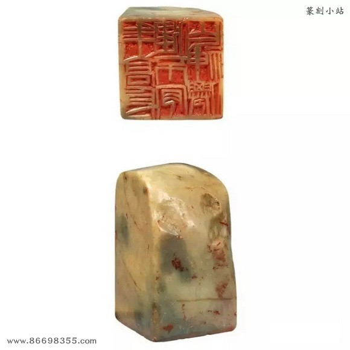 | |
| 白石造化（白文） | 寿山石 纵2.3cm；横2.4cm；高5.5cm |
||
| 七四翁（白文） | 纵2.6cm；横2.5cm；高1.3cm | ||
| 丁丑（白文） | 纵2.5cm；横2.5cm；高6.7cm | ||
| 七五衰翁（白文） | 纵2.8cm；横2.8cm；高5.8cm | ||
| 白石翁（白文） | 寿山石 纵0.9cm；横0.9cm；高3.2cm |
||
| 木居士（白文） | 纵2.6cm；横2.7cm；高4.1cm | ||
| 前世打钟僧（白文） | 纵3.3cm；横3.2cm；高4.2cm | ||
| 流俗之所轻也（白文） | 寿山石 纵4.2cm；横4.2cm；高2.8cm |
||
| 齐璜之印（白文） | 寿山（山水薄意） 纵3.3cm；横3.4cm；高5.3cm |
||
| 钞相牛经（朱文） | 纵3.3cm；横3.3cm；高3.9cm | ||
| 杜门（白文） | 寿山石 纵2.3cm；横2.3cm；高6cm |
 |
|
| 西山虽在亦堪怜（白文） |  |
纵2.5cm；横2.5cm；高4.8cm | |
| 西山如笑笑我邪（朱文） | 纵3.2cm；横3.2cm；高6.4cm | ||
| 饱看西山（朱文） | 纵3.5cm；横3.5cm；高10cm | ||
| 客中月光亦照家山（朱文） | 寿山石 纵3.3cm；横3.3cm；高7.5cm |
||
| 问君能有几多愁（朱文） 边款：丁丑冬，刊此印以问戚友。白石。 |
寿山石 纵3cm；横3cm；高1.7cm |
||
| 白石（白文） | 昌化鸡血 纵2.1cm；横2.2cm；高6.1cm |
||
| 瓜尔佳氏（白文） | 寿山石 纵2.3cm；横2.2cm；高6.2cm |
||
| 千头木奴（朱文） | 寿山石 纵2.2cm；横2.3cm；高6.2cm |
||
| 齐璜（白文） | 昌化鸡血（水泥底） 纵2.1cm；横2.1cm；高5.8cm |
 |
|
| 中国长沙湘潭人也（白文） | 纵5.7cm；横5.7cm；高1.1cm |  |
|
| 中国长沙湘潭人也（墨稿） | 纵6.1cm；横3cm；高11.8cm | ||
| 齐白石藏（朱文） 边款：予见古名人字画，绝无真者，故“三百石印”之内无“收藏”二字。今因得黄瘿瓢《采花图》，佩极，始刊此石。戊寅五日，时居故都。白石并记。 |
纵2.5cm；横2.5cm；高4.8cm | ||
| 白石题跋（白文） | 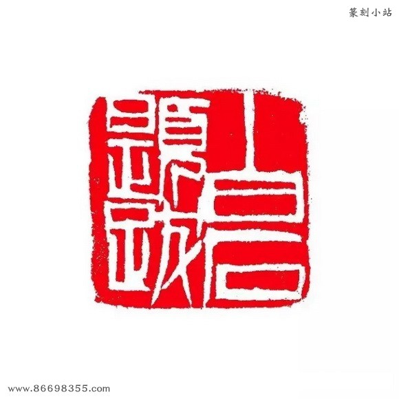 | 寿山芙蓉 纵2.4cm；横2.4cm；高4.2cm |
|
| 白石题跋（白文） | 寿山石 纵2.5cm；横2.5cm；高4.3cm |
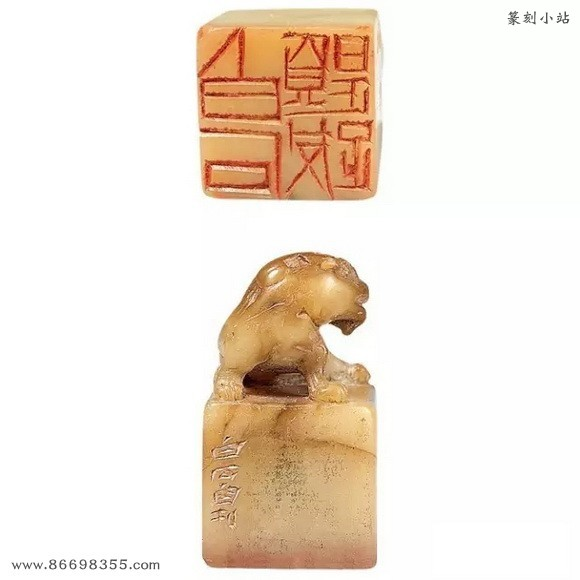 | |
| 白石题跋（朱文） | 寿山石 纵3.6cm；横3.6cm；高6.8cm |
 |
|
| 老苹曾见（白文） | 纵2.4cm；横2.4cm；高6cm | ||
| 苹翁得见有因缘（白文） | 纵2.5cm；横2.6cm；高3.9cm | ||
| 白石赏心（白文 ） | 寿山芙蓉 纵2cm；横2cm；高3.8cm |
||
| 白石三复（白文） | 寿山石 纵2.6cm；横2.6cm；高6.8cm |
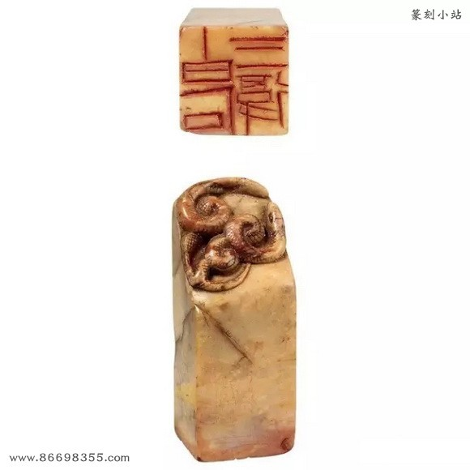 | |
| 白石老年赏鉴（白文） | 纵3.5cm；横3.5cm；高7.6cm | ||
| 白石老年自娱（白文） | 纵2.7cm；横2.6cm；高4.4cm | ||
| 乃翁过目（白文） | 寿山石 纵2.3cm；横2.3cm；高3.6cm |
 |
|
| 知足胜不祥（白文） | 寿山芙蓉 纵2.7cm；横2.8cm；高7.2cm |
||
| 穷后工诗（白文） | 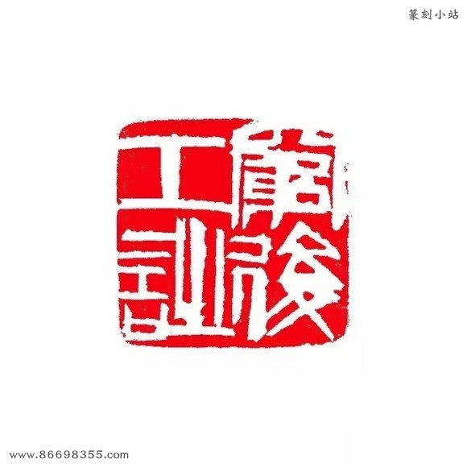 | 寿山石 纵2.1cm；横2.1cm；高4.4cm |
|
| 平生辛苦（白文） | 纵2.3cm；横2.3cm；高3.9cm | ||
| 借山翁（白文） |  |
寿山石 纵2.1cm；横2.1cm；高5cm |
|
| 老苹有子（白文） | 纵2.7cm；横1.7cm；高3.8cm | ||
| 老白（白文） 边款：“老白”二字五磨五刻方成，此道之不易可知矣。白石翁七十九时。白石七十九岁时自刊。己卯。 |
|||
| 七八衰翁（朱文） | 寿山石 纵3cm；横3cm；高3.8cm |
 |
|
| 七九衰翁（白文） | 寿山石 纵2.7cm；横2.7cm；高6.8cm |
||
| 齐璜老手（白文） | 田封门青 纵3.2cm；横2.7cm；高3.8cm |
 |
|
| 曾经灞桥风雪（白文） |  |
寿山石 纵4.7cm；横4.7cm；高1.1cm |
|
| 吾家衡岳山下（朱文） | 纵3.5cm；横3.5cm；高7.4cm | ||
| 寻常百姓人家（朱文） | 纵3.2cm；横3.3cm；高6.9cm | ||
| 四不怕者（白文） 边款：今年辰运，辰年祸及老妻，作道场曰：“打破寿字壶，多一丧杖，僧人遗落鼓槌。此四者，我不怕。”“四”字可以读上声。八十老人并记。 |
寿山石 纵2.1cm；横2.1cm；高4.9cm |
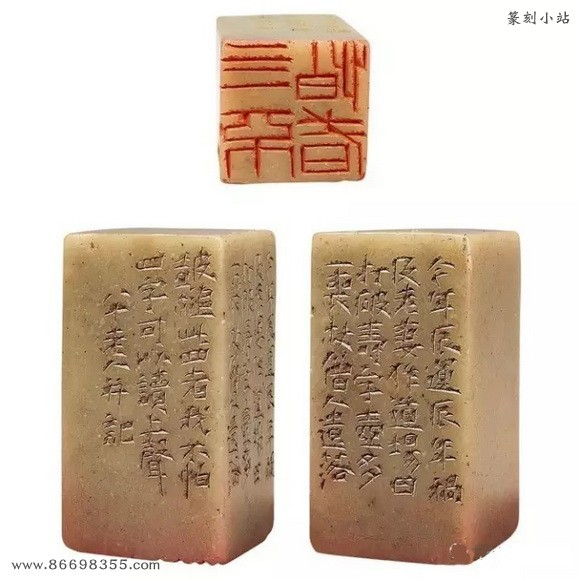 | |
| 吾年八十矣（白文） | 寿山石 纵2.8cm；横2.8cm；高2.5cm |
||
| 八十岁应门者（朱文） | 纵3.2cm；横3.2cm；高5cm | ||
| 一息尚存书要读（白文） | 纵4.2cm；横4.2cm；高10.6cm | 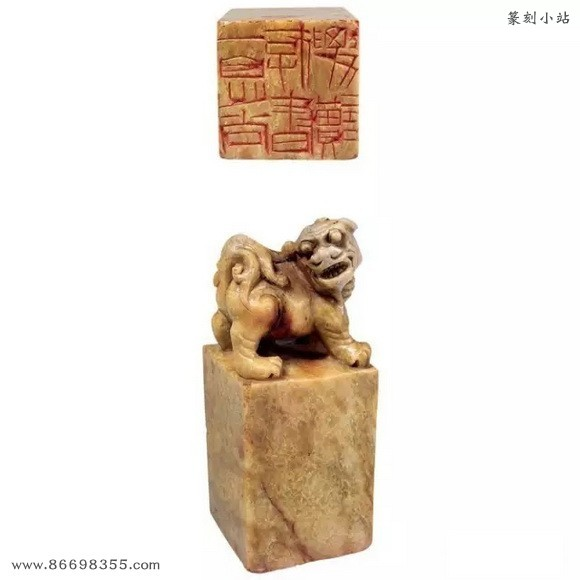 | |
| 白石画虫（朱文） | 寿山芙蓉 纵2cm；横1.7cm；高4cm |
||
| 九九翁（白文） | 纵2cm；横2cm；高5.8cm | ||
| 光明堂（白文） | 纵1.8cm；横1.8cm；高5.2cm | ||
| 天涯亭过客（朱文） | 寿山石 纵4.7cm；横4.8cm；高1.2cm |
||
| 寡交因是非（白文） | 纵4cm；横4cm；高2.9cm | ||
| 寄苹吟屋（白文） | 纵2.8cm；横2.8cm；高8.7cm | ||
| 借山老子（白文） | 纵2.2cm；横2.3cm；高3.2cm | ||
| 白石草堂（白文） | 寿山石 纵3.4cm；横3.3cm；高7.8cm |
||
| 马上斜阳城下花（白文） | 纵3.8cm；横3.8cm；高3.5cm | ||
| 癸未（白文） | 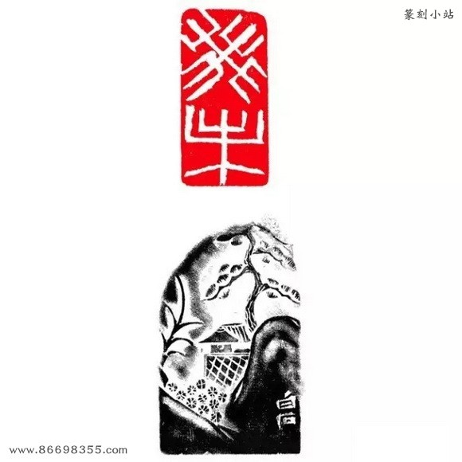 | 寿山芙蓉 纵4.2cm；横2cm；高7cm |
|
| 心耿耿（白文） | 纵2.3cm；横2.3cm；高6.8cm | ||
| 无君子不养小人（白文） | 纵5cm；横5.2cm；高9cm | ||
| 饿叟（白文） | 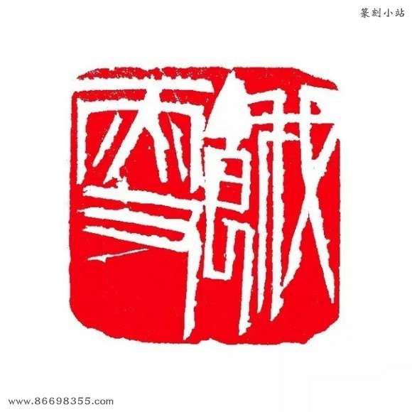 | 纵3.2cm；横3.2cm；高6.7cm | |
| 年八十五矣（白文） | 纵2.1cm；横2cm；高5.7cm | ||
| 痴思长绳繁日（白文） | 纵3.5cm；横3.5cm；高6.2cm | ||
| 大羽（朱文） | 寿山芙蓉 纵2.7cm；横2.7cm；高4.9cm |
||
| 老夫也在皮毛类（白文） | 寿山石 纵3.8cm；横3.7cm；高5.8cm |
||
| 老夫也在皮毛类（印面磨去） | 尺寸：纵2.8cm；横2.9cm；高5.4cm | ||
| 吾草木众人也（朱文） | 寿山石 纵5.4cm；横3.8cm；高1.4cm |
||
| 老为儿曹作马牛（白文） | 纵4.1cm；横4.1cm；高1.5cm | ||
| 儿女冤家（白文） | 纵2.7cm；横2.5cm；高4cm | ||
| 有衣饭之苦人（白文） | 纵3cm；横3cm；高6.1cm | ||
| 苦白（白文） | 寿山芙蓉 纵2.5cm；横2.5cm；高5.8cm |
||
| 心内成灰（白文） | 寿山石 纵2.7cm；横2.7cm；高7.5cm |
||
| 心与身为仇（白文） | 纵3.7cm；横3.7cm；高5.1cm |  |
|
| 老年肯如人意（白文） | 纵3cm；横3cm；高4.8cm | ||
| 老手齐白石（白文） | 纵2.7cm；横2.7cm；高3cm | ||
| 故里山花此时开也（白文） | 纵3.6cm；横3.6cm；高5.3cm | ||
| 何要浮名（朱文） | 寿山芙蓉 纵3.2cm；横3.2cm；高5.8cm |
||
| 年八十六矣（白文） |  |
寿山石 纵2.5cm；横2.5cm；高4.4cm |
|
| 百树梨花主人（白文） | 纵3.8cm；横3.8cm；高2cm |  |
|
| 望白云家山难舍（白文） | 纵4cm；横4.1cm；高1.1cm | ||
| 有情者必工愁（朱文） | 纵3.8cm；横3.8cm；高1.8cm | ||
| 鲁班门下（白文） | 纵3.5cm；横3.4cm；高4cm | ||
| 吾年八十七矣（白文） | 纵1.9cm；横1.9cm；高5cm | ||
| 最工者愁（白文） | 纵3cm；横3cm；高10cm | ||
| 白石吟屋（白文） | 纵2.9cm；横2.9cm；高8cm | ||
| 丁巳劫灰之余（白文） | 纵3.3cm；横3.3cm；高4.5cm | ||
| 齐白石（白文） | 纵2.1cm；横2.1cm；高6cm | ||
| 吾年八十八（朱文） | 纵2.3cm；横2.3cm；高4.9cm | ||
| 年八十九（白文）据印文断此印刻于一九四九年。 | 寿山纵2cm；横2.1cm；高4.7cm | ||
| 君子之量容人（朱文） | 纵8.4cm；横3.1cm；高1.4cm | ||
| 年九十（白文） | 纵2.5cm；横1.7cm；高3.4cm | ||
| 行高于人众必非之（朱文） | 纵5.1cm；横4.5cm；高9.3cm | ||
| 白石九十七矣（朱文） 据印文知此印成于一九五七年，然细察印面，此印刀法与白石老人完全不类。此时老人无论作书、作画，眼力、手力皆已不济，故此印非白石老人所刻。疑为老人篆印，他人代刀刻成。 |
纵3.3cm；横3.4cm；高4cm |